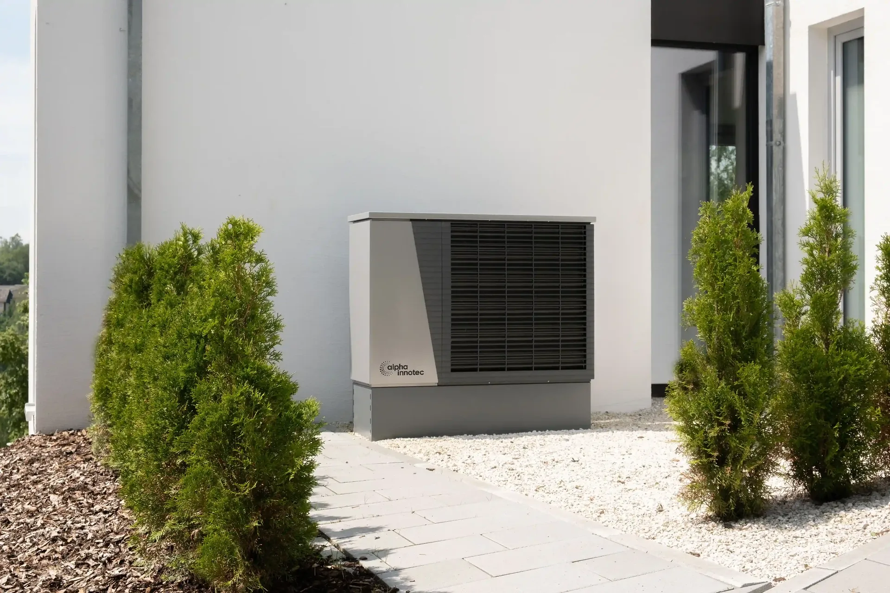
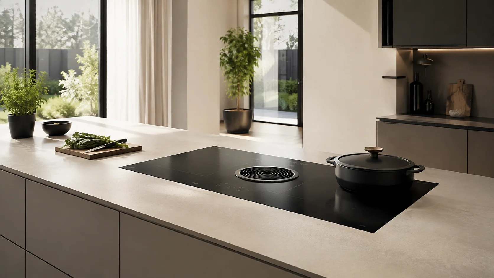
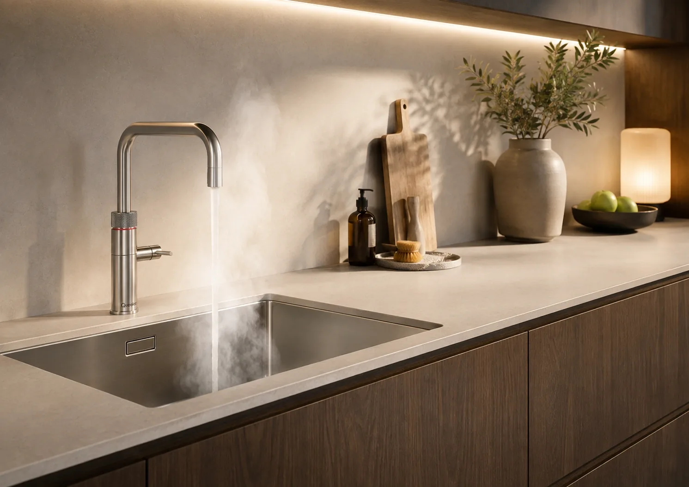
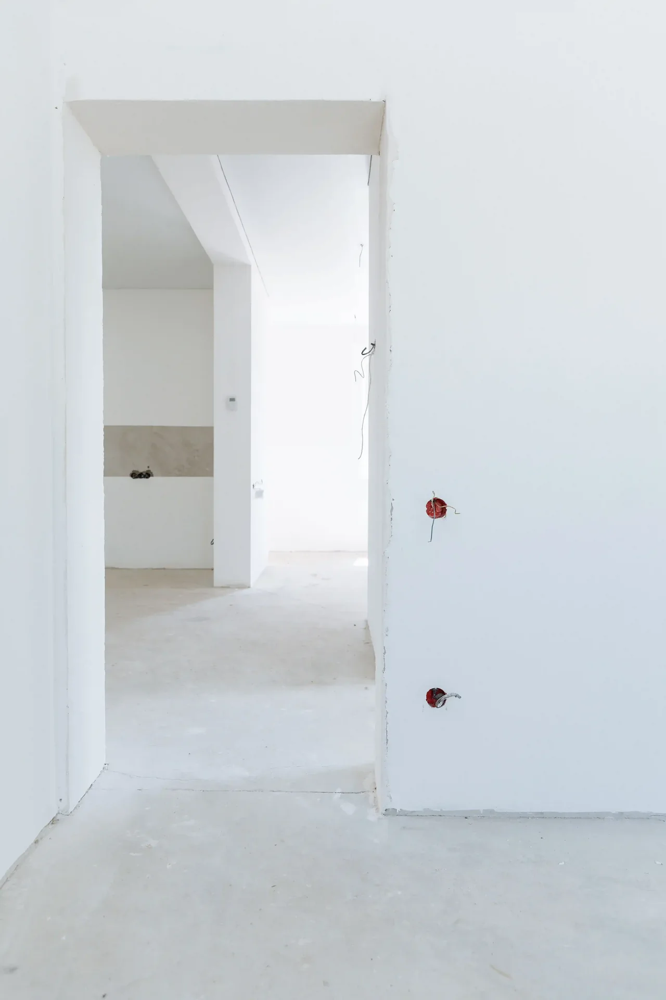

Van het vervangen of uitbreiden van uw groepenkast tot inductie, Quooker, voorbereiding voor een warmtepomp, stopcontacten, krachtstroom en zakelijke elektrotechniek. Wij zorgen voor een veilige installatie die past bij wat u nu én later nodig heeft.
NEN 1010
NEN 3140
VCA
Persoonlijk advies
Wat wilt u laten uitvoeren?
Kies een onderwerp om direct naar de relevante werkzaamheden op deze pagina te gaan.
De groepenkast verdeelt en beveiligt de elektrische installatie in uw woning of bedrijfspand. Bij veroudering, uitbreiding of nieuwe apparatuur kan aanpassing nodig zijn.
Wij controleren de bestaande installatie en bepalen welke groepen, beveiligingen en aansluitcapaciteit nodig zijn.
Groepenkast vervangen
Voor verouderde of ongeschikte installaties.
Groepenkast uitbreiden
Extra groepen voor nieuwe apparatuur of installaties.
Voorbereiden op zwaarder elektrisch gebruik
Bijvoorbeeld laadpaal, warmtepomp, thuisbatterij of inductie.
Plek voor groepenkastcheck
Is uw groepenkast geschikt?
Hier komt de groepenkastcheck. De interactieve module zelf is bewust nog niet ingebouwd.
De toekomstige check vraagt naar 1- of 3-fase, de leeftijd van de groepenkast, wat u wilt aansluiten en een foto van de huidige installatie.
Wij verzorgen de benodigde elektrotechnische voorbereiding voor warmtepomp, inductiekookplaat en kokendwaterkraan. Het leveren of installeren van de warmtepomp zelf valt hier niet onder.
Elektrische voorbereiding warmtepomp
Wij controleren het beschikbare vermogen, de groepenkast en benodigde voeding.
Daarna realiseren we de elektrotechnische voorbereiding waarop de warmtepompinstallateur kan aansluiten.

Inductiekookplaat
Wilt u overstappen van koken op gas naar inductie? Dan is vaak een aparte kookgroep of aanpassing in de groepenkast nodig.
Sparky Energies zorgt voor een veilige aansluiting van uw inductiekookplaat, inclusief de juiste voorbereiding in de keuken en groepenkast. Zo kunt u zorgeloos elektrisch koken.

Quooker / kokendwaterkraan
Een Quooker of kokendwaterkraan vraagt om een geschikte elektrische aansluiting in de keuken. Vooral bij renovaties of nieuwe keukens is het verstandig om dit direct goed voor te bereiden.
Wij kunnen de benodigde groep, bekabeling of wandcontactdoos netjes aanleggen en aansluiten, zodat uw Quooker veilig en betrouwbaar gebruikt kan worden.

Extra elektra waar u het nodig heeft
Bij een verbouwing, nieuwe keuken, kantoorinrichting of renovatie zitten stopcontacten vaak niet op de juiste plek. Soms zijn er ook simpelweg te weinig aansluitpunten. Sparky Energies kan extra stopcontacten plaatsen, bestaande stopcontacten verplaatsen of de elektra aanpassen aan de nieuwe indeling van uw woning of bedrijfspand.
Stopcontacten bijplaatsen of verplaatsen
Nieuwe aansluitpunten op een praktische en veilige plek.
Binnen- en buitenverlichting
Verlichting en bediening passend bij de ruimte en toepassing.
Keuken- en apparatuuraansluitingen
Geschikte groepen, bekabeling en aansluitpunten voor apparatuur.
Bekabeling en renovaties
Elektrische voorzieningen aanpassen aan een nieuwe indeling of verbouwing.

Elektra voor bedrijfspanden
Een bedrijfspand vraagt om een elektrische installatie die veilig, praktisch en betrouwbaar is. Of het nu gaat om een kantoor, winkel, werkplaats, magazijn of bedrijfsruimte: Sparky Energies helpt met het aanleggen, uitbreiden en aanpassen van elektrotechnische voorzieningen.
Krachtstroom
Voeding voor zware apparatuur en machines. Veilig en volgens voorschrift aangelegd.
Werkplek voorzieningen
Wij plaatsen of verplaatsen elektra zodat iedere werkplek praktisch, veilig en netjes is ingericht.
Datapunten en netwerkvoorbereiding
Wij kunnen datapunten voorbereiden of aanleggen voor netwerkapparatuur.
Verlichting
Goede verlichting zorgt voor comfort, veiligheid en een professionele uitstraling. Wij helpen met binnen- en buitenverlichting.
Zo werken wij
Aanvraag, beoordeling, duidelijk voorstel, uitvoering en controle bij oplevering.
Aanvraag
Vertel wat u wilt aanpassen en stuur waar mogelijk foto’s mee.
Beoordeling
We beoordelen installatie, aansluitcapaciteit en toekomstplannen.
Duidelijk voorstel
U ontvangt werkzaamheden, materialen, planning en kosten.
Uitvoering
Onze installateurs voeren het afgesproken werk veilig en netjes uit.
Controle & oplevering
We controleren de installatie en leggen uit wat is aangepast.
Veelgestelde vragen over elektrotechnische aanpassingen
Wanneer moet een groepenkast worden vervangen?
Een verouderde groepenkast kan onvoldoende capaciteit hebben voor moderne apparatuur zoals inductie, warmtepomp of laadpaal. Wij controleren uw installatie en adviseren wanneer vervanging nodig is.
Heb ik een extra groep nodig voor inductie of een Quooker?
Inductie, Quooker en andere krachtige apparaten vereisen vaak hun eigen groep. Wij bepalen wat uw woning nodig heeft en breiden uw groepenkast veilig uit.
Is mijn groepenkast geschikt voor een laadpaal of warmtepomp?
Dat hangt af van de beschikbare groepen, fasen, hoofdzekering en het verwachte vermogen. Wij beoordelen de bestaande installatie en adviseren welke uitbreiding nodig is.
Wat kost het vervangen of uitbreiden van een groepenkast?
De prijs hangt af van de huidige installatie, het aantal groepen, 1- of 3-fase en de gewenste aansluitingen. Na beoordeling ontvangt u een duidelijke prijsindicatie.
Hoe lang duren de werkzaamheden?
Dat verschilt per aanpassing. Bij het voorstel geven wij aan hoeveel tijd nodig is en wanneer de stroom tijdelijk wordt uitgeschakeld.
Kunnen jullie eerst foto's beoordelen?
Ja. Met duidelijke foto's van de groepenkast, meterkast en gewenste aansluitplek kunnen wij vaak alvast een eerste inschatting maken.
Laat uw elektrische installatie beoordelen
Vertel wat u wilt aanpassen. Wij beoordelen uw situatie en nemen contact op met gericht advies.